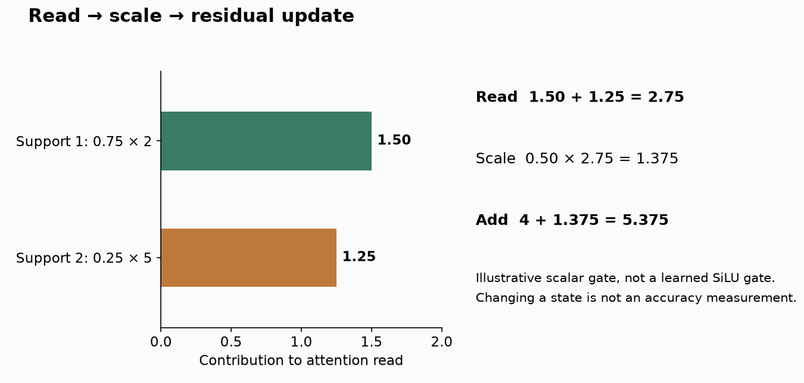
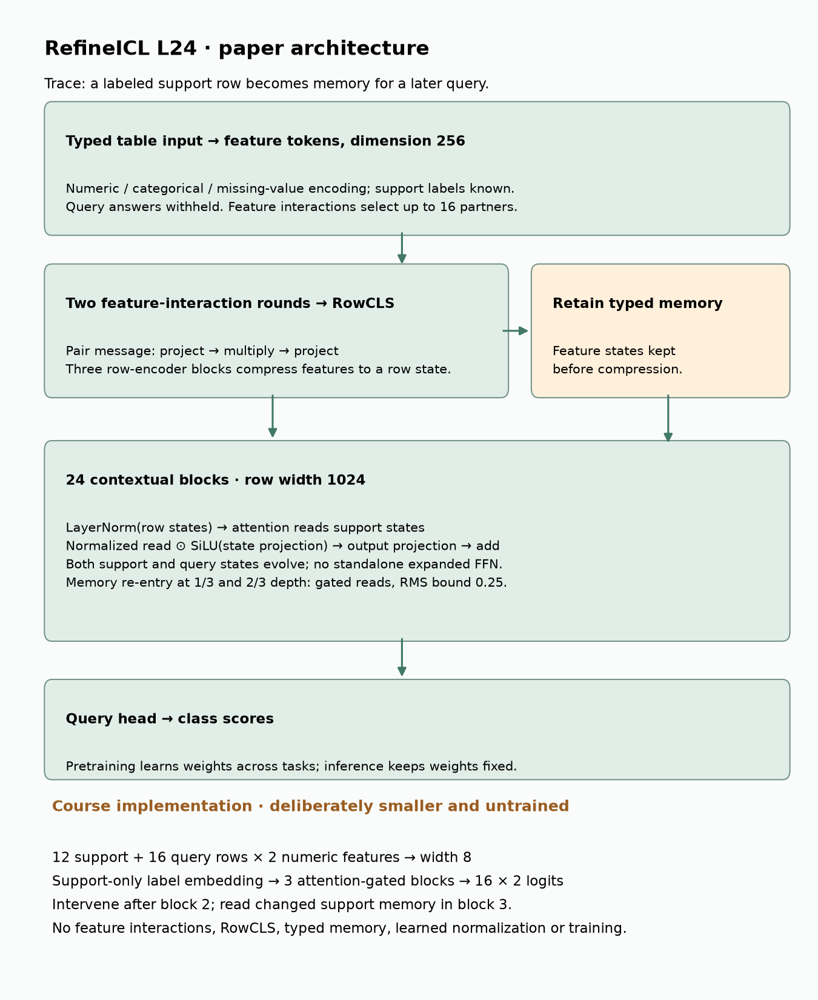
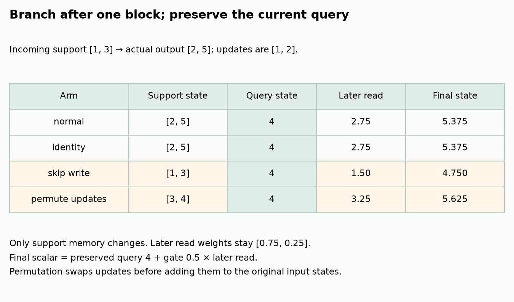
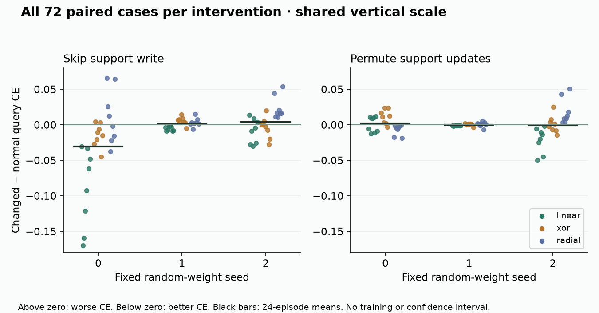

B22 · The support set is working memory¶
Research bridge · Elective ◆ · One win: isolate an internal update and trace its downstream effect
B21 changed database links while holding a model fixed. Here we hold the input table fixed and change one internal state. The mission asks which computations make relational and tabular models useful. To answer that, we need experiments that distinguish a plausible explanation from a mechanism that actually affects predictions.
Student notebook · Executed solution · Download solution · Printable reference · Reproduction contract
See the idea · then trace the details
RefineICL: support representations become working state
Hold the inputs fixed and follow a write to the internal support state.
1Encode support and query
Observed support labels + unlabeled query
The same task context starts the comparison. Keep the input table and model weights fixed.
2Refine internal support
Read support → update support representations
An internal write changes the support state used by later computation. This is distinct from updating model parameters.
3Read the refined state
Later query reads → prediction
Later reads can depend on the updated support. A skip or permutation intervention tests whether that write matters in the controlled experiment.
Pause and predict: If the weights and raw inputs are fixed, can predictions still change after an internal support write?
Yes. Later computation consumes a different internal state; fixed parameters do not imply fixed activations.
Answer: Yes. Later computation consumes a different internal state; fixed parameters do not imply fixed activations.
1 · Recall the boundary, then move inside it¶
An intervention deliberately changes one part of a computation. A matched control keeps the other relevant conditions the same. In B21 that meant the same features and weights with different permitted links. In B22 it means the same examples, labels, weights and current query output, with different stored support states.
In-context learning (ICL) predicts from examples supplied in the input without updating the model's weights for that task. Support rows are those examples, with known answers. Query rows are the rows whose answers the model must predict. A state is the numeric vector representing a row inside the network. Weights are fixed during inference; these vectors can still change from block to block.
Worked prerequisite. Suppose three support customers have labels buy, buy, leave, and a fourth customer's label is unknown. A model may read their features and the three known labels. Reading the fourth customer's answer would leak the quantity being predicted. Our code therefore accepts query features in forward, but no query labels.
In plain terms. A fixed program can revise its working memory. “No weight update” does not mean “no internal change.”
2 · Read a correction, choose its size, add it¶
The September preprint RefineICL proposes that labeled support representations are refined and reused for later query predictions. It motivates an attention-gated update. This is an exploratory mechanism account, not an established claim that every model computes the same algorithm.
Attention reads. Each receiving row produces a query vector. Support rows produce key vectors, used for similarity, and value vectors, carrying information. Similarities pass through softmax: exponentiate scores and divide by their sum. The resulting nonnegative weights sum to one. A weighted sum of values is the attention read.
Worked example. Attention weights [0.75, 0.25] reading values [2, 5] produce 0.75×2 + 0.25×5 = 2.75. A gate of 0.5 scales this to 1.375. Adding it to the old receiving state 4 gives 5.375. These are illustrative scalar values, not measured RefineICL activations.


Gating scales. A gate is a state-dependent multiplier for the read. RefineICL uses SiLU, the function g / (1 + exp(−g)), coordinate by coordinate. It is not restricted to probabilities or to the range 0–1. A residual connection adds the projected correction to the previous state instead of replacing it.
The paper's block has this form:
z = LayerNorm(h)
read = attention(z)
gate = SiLU(z × W_gate)
h_next = h + (Norm(read) ⊙ gate) × W_out
h contains row states; z is their normalized version. Layer normalization centers and scales the coordinates within each row; a small epsilon prevents division by zero. W_gate and W_out are learned projection matrices. ⊙ multiplies corresponding coordinates. The paper leaves the attention-output operation written as Norm; our course explicitly uses layer normalization without learned scale/bias. Its parameters are random and fixed, not learned.
CHECK. If the gate is zero, how much can this block change its input? If you double an attention weight, what else must change to keep weights summing to one?
3 · Model architecture: where the support states live¶
RefineICL's complete model includes more than this block. Typed encoding treats numeric values, categories and missingness separately. Feature interactions mix information between columns. Its selected low-rank interaction first scores candidate column pairs, selects up to16 neighbors and forms messages through smaller intermediate vectors. “Low rank” here means projecting to fewer coordinates before multiplying and projecting back.
RowCLS tokens are learned summary tokens that gather feature information into fixed-width row vectors. Typed memory retains earlier feature states so later blocks can read information lost during row compression. The paper describes two gated memory reads, at one-third and two-thirds of the contextual stack. The diagram identifies these paths and the query-label boundary. Architecture, §4 and Appendix C


Read the diagram labels. L24 means 24 contextual blocks. An FFN is a feed-forward network applied separately to each row; an expanded FFN first widens the vector before projecting it back. RefineICL removes that standalone expansion from the contextual stack, but still has learned projections and nonlinear gates. RMS means root mean square, a measure of vector magnitude. The paper caps a memory-read correction relative to the current row-state RMS. Its feature-interaction ranks are 32 before compression and 64 in the row encoder. Its memory reads use eight attention heads, parallel reading operations whose outputs are combined.
Course forward pass. We use 12 support and16 query rows, each with two numeric features. A2×8 projection creates28 row vectors of width 8. A known-label embedding is added only to the12 support rows. Three blocks update all 28 states. Every row reads only the12 support keys and values, so query rows cannot become evidence for other rows. A final8×2 projection gives two logits, unnormalized class scores, for each query. Softmax would convert those scores to class probabilities.
Training and inference. In the paper, pretraining learns a reusable procedure from tasks; inference keeps those learned weights fixed. Our experiment has no pretraining or optimization. We draw three sets of random weights and freeze them. The same interface makes the intervention inspectable without pretending we recovered the trained model.
Scope check. The course omits the paper's typed feature encoder, selected feature interactions, RowCLS compressor and memory re-entry. Width8 and3 blocks replace width 1024 and24 blocks. The complete paper topology is shown for understanding; the notebook implements the explicitly labeled course model. Neither is presented as an executable historical reconstruction.
4 · Keep the current query output; remove one support write¶
After block 2, branch the same forward pass. In the normal arm, keep its output. In the skip arm, replace only support outputs with their inputs to that block. Keep every query output exactly the same. Run block 3 normally in both arms.


Why preserve queries? Rewinding query states too would change two routes at once: the current query calculation and future reads from support. Preserving query outputs isolates the effect of the stored support write on later computation. This is a causal intervention within this fixed model, input and state-replacement rule. It does not prove that the changed state is typical of states seen during training.
Identity control. Copy the original support outputs back into the same positions. Predictions must remain exactly unchanged. A difference indicates an implementation bug, not a scientific discovery.
Permutation control. Move each support update to the next support row, wrapping the last one to the first. Add those updates to the original recipient inputs. This preserves the collection of update vectors while changing who receives them. In our course, later blocks run on this changed state.
Scope check. The paper's Table 10 permutation control scores an immediate counterfactual objective; it does not run a new downstream trajectory. Our downstream permutation is a declared additional control. Do not attach the paper's Table 10 numbers to it.
Predict the later read before changing the memory
Worked trace. Support values entering the intervention block are [1,3]; its outputs are [2,5]. The updates are [1,2]. Skipping leaves [1,3]; swapping updates gives [3,4]. In every arm the current query output remains4. A later read with weights [0.75,0.25] and scalar gate 0.5 gives5.375 normally,4.75 after skipping, and5.625 after swapping. A zero gate makes all final scalar states equal4. This widget illustrates routing; it does not calculate class accuracy or the full neural network.
5 · Measure the paired outcome, not the attractiveness of the explanation¶
Cross-entropy (CE) is the average negative natural logarithm of the probability assigned to the true class. Lower is better. Accuracy is the fraction of query rows whose highest-scoring class is correct. Our paired effect is changed − normal: positive CE means worse predictions; positive accuracy means better predictions. Accuracy differences are reported in percentage points, so0.50→0.625 is+12.5 points.
Worked metric. True class0, baseline logits [2,0], changed logits [0,2]: baseline CE≈0.127; changed CE≈2.127. The increase is 2.0. The intervention has flipped the prediction away from the true class. We score both arms on identical query rows; no answer enters the state update.
Complete course protocol. Three fixed random models ×24 shared episodes ×4 arms =288 trajectories. Episodes combine three rules—linear boundary, an XOR-type rule (class 1 when coordinate signs agree; a label-swapped XOR), and radial boundary—with eight replicates. Each has six supports and eight queries per class. The seed controls coordinates; the same coordinates and labels are reused across arms. We evaluate all4,608 query predictions and retain every intermediate state. There is no outcome-based filtering.
| Arm | Random seed | Mean ΔCE | Episode ΔCE range | Worse CE | Mean Δaccuracy (pp) |
|---|---|---|---|---|---|
| identity | 0 | +0.000000 | [+0.000000, +0.000000] | 0/24 | +0.000 |
| identity | 1 | +0.000000 | [+0.000000, +0.000000] | 0/24 | +0.000 |
| identity | 2 | +0.000000 | [+0.000000, +0.000000] | 0/24 | +0.000 |
| skip | 0 | -0.030857 | [-0.169584, +0.065388] | 6/24 | -0.260 |
| skip | 1 | +0.001084 | [-0.008919, +0.014739] | 14/24 | -2.344 |
| skip | 2 | +0.003664 | [-0.029844, +0.053670] | 15/24 | +1.042 |
| permute | 0 | +0.001634 | [-0.018556, +0.023624] | 11/24 | -0.521 |
| permute | 1 | -0.000073 | [-0.006960, +0.004808] | 12/24 | -0.260 |
| permute | 2 | -0.000746 | [-0.050195, +0.050656] | 12/24 | +3.385 |


Read the result. Identity has zero effect everywhere. Skipping a support write has mixed signs, including a negative mean CE change for seed 0: removing part of a random network can improve its predictions. The experiment establishes that the code isolates the route and that later predictions can depend on the support write. It does not establish that random updates are useful, that the paper's learned updates are reproduced, or that the method helps real relational tasks.
Uncertainty unit. Twenty-four episodes share three generating rules. The same episodes are used for all three models. Dots show paired cases, not independent training replications. We show all model means and episode ranges; we do not turn288 trajectories into a spurious sample size for pretrained-model superiority.
6 · The exact paper target and the missing evidence¶
The selected target is Appendix E.2's support-write intervention. It uses the pretrained L24 checkpoint at 15K updates (15,000 training updates), restores block 12's support input, preserves its query output and runs later blocks. Its72 RBF episodes use8 features,1,024 supports and256 queries; the grid is3 class counts ×3 rule sizes ×8 replicates. An RBF kernel gives high similarity to nearby points and lower similarity to distant points; the paper constructs synthetic labeling rules from its eigenmodes, directions of variation of the kernel matrix.
The authors report CE increasing by 0.0510 on average, with an episode-bootstrap95% interval[0.0417,0.0608], and worse CE in72/72 episodes. Accuracy decreases by1.44 points. A paired bootstrap resamples complete episode pairs, preserving the within-episode comparison. These are paper-reported numbers, not our measured scores.
What the result supports. In that checkpoint and episode set, the middle support write contributes to later query performance. It does not by itself establish that a particular support objective explains the effect. An internal representation can change, or score better under a probe, without downstream generalization improving.
Reproduction status. Appendix H says trained weights are absent from the supplement. The retrieved arXiv v1 archive contains35 members and no executable model/probe/checkpoint files. We authenticated those responses and checked the reported target, but did not recover the weights, exact episode identities or full-precision paired records. The historical lane is INCOMPLETE_SOURCE_PROTOCOL_GATE / NOT_RUN. The CLI refuses fresh paper inference until those gaps are resolved. The manifest and source audit make the boundary reviewable.
Scope check. A source audit, complete course experiment and historical reproduction are different accomplishments. The paper also labels its TabArena continuation benchmark-informed; do not treat that ranking as untouched evaluation. Full pretraining and whole-benchmark reproduction remain unrun. Nothing in this lesson establishes a relational-model advantage.
7 · Implement, challenge, explain¶
In the portable notebook, complete three functions used by the full experiment. The complete visible implementation is also available as a Python file:
attention_read: stable similarity weighting and support-value reading. Subtract the largest score before exponentiating; this preserves softmax while preventing overflow.replace_support: restore or permute only support rows; preserve query outputs and input arrays. Permute updates, not final states.paired_effect: compute CE and accuracy differences with their signs and units. Reject misaligned inputs.
CHECK. Run all 288 trajectories, then reconstruct them with the independent scalar-loop oracle. Change a query label after inference: logits must stay fixed while scores may change. Replace the whole state instead of support rows: the preservation test must fail. Delete an episode result: the coverage audit must fail.
EXIT. Explain which path remains fixed, why identity is necessary, what a mixed-sign result means, and which artifacts prevent the historical reproduction. Submit your three functions and explanation to the agent for feedback. Author execution is not learner mastery; your defense is still pending. Revisit the intervention from memory tomorrow, in one week and in one month.
Primary reading. Read RefineICL §3–4, then Appendix E.2 and H. First sketch the path without the diagram; then explain what observation would contradict the claim that a particular support write improves later predictions.
Next: B23. Freeze one declared comparison and authenticate the full evidence chain. A well-designed intervention is one ingredient; a reproducible checkpoint, data protocol and fair comparator are still required. Research handoff plan
Ask the agent any follow-up question, especially if the difference between weights, states and support labels is unclear.